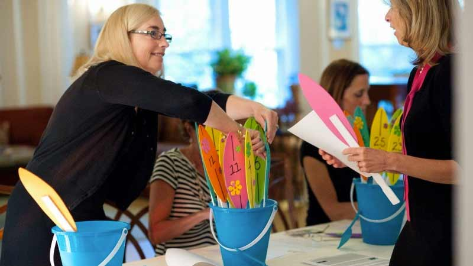

“Alone we can do so little; together we can do so much”
- Helen KellerThe Education Foundation of the Kennebunks and Arundel is a community-based foundation; our work on behalf of our children is only possible because of the talent, creativity and energy invested by dozens of volunteers from our communities. If you share the passion for making our children’s education the best it can be, please join us!
The EFKA and its committees are directed and governed by volunteers of the towns of Kennebunk, Kennebunkport, and Arundel, Maine. We seek to bring community resources directly into the classrooms of RSU 21.

The efforts of the EFKA are primarily driven by five volunteer-based committees. We have no paid staff so volunteers from the local community are the lifeblood of the foundation. Without them, we could not ignite the creative spark in the schools of RSU 21.
Overview: The Grants Committee is the liaison between the Board and the schools. The Grants Committee meets monthly.
Committee Members: Christian Babcock (Chair), Rebecca Read (Liaison to Kennebunk High School), Jen Foy (Liaison to Middle School of the Kennebunks), Jennifer Hass (Liaison to Sea Road School), and School Liaisons for Kennebunkport Consolidated School, Kennebunk Elementary School, and Mildred L. Day School.
Overview: The Events Committee coordinates the foundation’s fundraising events and activities. The Events Committee meets as needed.
Committee Members: Mandy Nelson (Chair), Jen Foy, Jameson Smith, Sarah.
Overview: The Marketing & Communications Committee seeks to increase community awareness of the EFKA and the programs that it supports in the schools of RSU 21. The Marketing & Communications Committee meets monthly.
Committee Members: Mandy Nelson (Chair), Jameson Smith, Christian Babcock, Jen Hass, Alison Eagleson, Danielle, Matt Shinberg.
Overview: Formed in 2009, the Governance Committee oversees and manages the internal structure and operations of the EFKA as it continues to evolve. The Governance Committee meets monthly.
Committee Members: Jen Foy (President), Jen Hass (Secretary), Kirsten Camp (Treasurer), Mandy Nelson (former President), Amy McGary (former Secretary).
Overview: Formed in 2014, the Annual and Leadership Giving Committee leads and supports the foundation’s philanthropic efforts. The Annual and Leadership Giving Committee meets monthly.
Committee Members: Jen Foy (Chair and President), Jameson Smith, Rebecca Read, Mandy Nelson.
We value your partnership. If you are interested in joining one of our committees or volunteering in another capacity, get in touch with us today.
Get in TouchSend us an email and we'll get back to you asap.